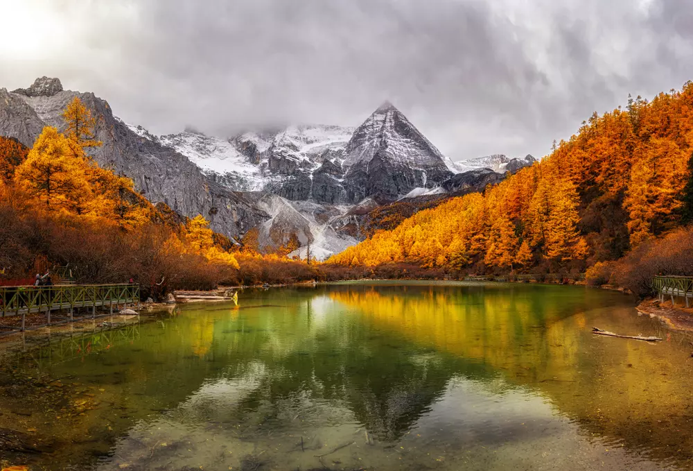

สถานที่ท่องเที่ยวแนะนำ

ปักกิ่ง (Beijing)

กำแพงเมืองจีน (Great Wall of China)

เซียงไฮ้ (Shanghai)

หาดไว่ทาน (The Bund)

พิพิธภัณฑ์เซี่ยงไฮ้ (Shanghai Museum)

หุบเขาจิ่วจ้ายโกว (Jiuzhaigou)

ฮาร์บิน (Harbin)

สุสานจิ๋นซีฮ่องเต้

อุทยานแห่งชาติจางเจียเจี้ย

พระราชวังโปตาลา (Potala Palace)

ศูนย์อนุรักษ์หมีแพนด้า (Chengdu Panda Base)

ทะเลสาบพระจันทร์เสี้ยว (Crescent Lake)

ต๋ากู่ปิงชวน (Dagu Glacier)

อุทยานธรณีวิทยาตันเสียจางเย่ (Danxia)

กุ้ยหลิน (Guilin)

อุทยานย่าติง (Yading Nature Reserve)

เมืองโบราณเฟิ่งหวง (Fenghuang)

ช่องแคบซานเสียแห่งลุ่มแม่น้ำแยงซีเกียง

ทะเลสาบชิงไห่ (Qinghai Lake)

ทะเลสาบซีหู (Xi Hu / West Lake)

อุทยานป่าหิน (Shilin Stone Forest)